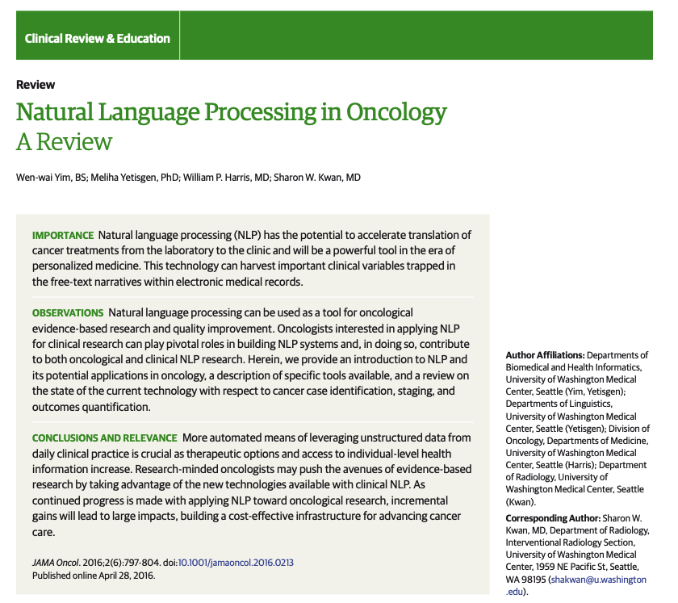
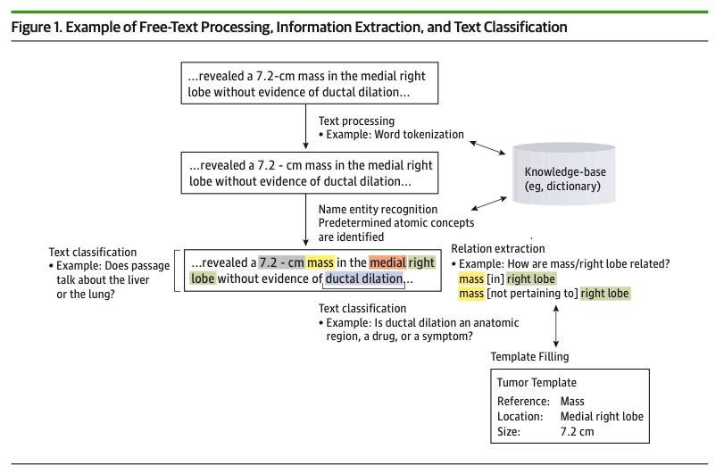
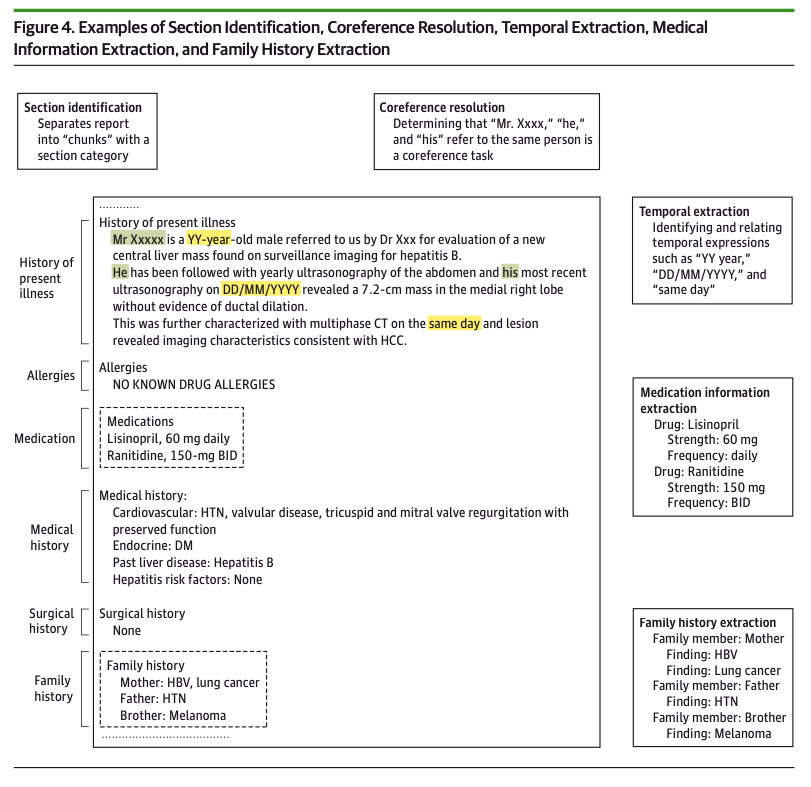

In this week’s blog, I will be summarizing Yim et al’s 2016 review paper from JAMA Oncology, titled “Natural Language Processing in Oncology: A Review.” This paper was written by researchers at the University of Washington Medical Center, including individuals from the Departments of Biomedical and Health Informatics, the Department of Linguistics, the Division of Oncology at the Department of Medicine, and the Department of Radiology. You can read the abstract for this paper here.
The full text of this manuscript is unfortunately not publicly available (you or your institution must have access to JAMA Oncology to read the full text), so I hope that this summary provides those without access to this journal some insight into some exciting content. Furthermore, given that this paper is from 2016, it does not include many of the recent advances in the past 8 years related to transformer / large language models that have become more relevant in NLP applications. Nevertheless, I found this paper to be an excellent summary of how to frame the workflow for tackling NLP research questions, particularly in terms of the collaborations needed among oncologists and informaticians. Much of the content covered remains as relevant today as it did 8 years ago, and I look forward to using my takeaways from this material in my own work at the Fred Hutch Cancer Center.
With context out of the way, let’s get started!

Oncology-focused NLP
Natural Language Processing (NLP) refers to any computer-based algorithm that can handle, augment, and transform natural language so that it can be represented for computation.
NLP is particularly attractive for clinical research applications for the following reasons. One can:
- define new variables that are not readily available in electronic health records as stored values
- automate the process of reviewing clinical notes for patient diagnosis instead of requiring a resource-intensive manual review process.
- expedite biomedical discovery by empowering clinicians with the ability to analyze outcomes in the context of big data
With respect to the field of oncology, NLP applications typically have the following objectives:
- Case identification: determine which patients may have a case of the disease of interest
- Here, we process the free text from clinical notes to augment the diagnosis codes that correspond to a patient’s labeled set of diseases or symptoms
- Staging: determine the stage of a patient’s cancer progress
- Here, we process the free text from clinical notes to determine the stage of a patient’s cancer progression. This objective is more challenging than case identification because it is highly context-specific depending on the type of cancer.
- Outcome determination: determine the patient’s ultimate outcome (cancer advancement vs. remission vs. death)
- Here, we process the free text from clinical notes to determine the patient’s ultimate outcome (advancement vs. remission vs. death). This objective is the most challenging of the three because it essentially requires us to perform cancer staging with respect to time.
The role of the oncologist
As with many objectives in the domain of biomedical informatics, developing NLP systems for oncology applications requires significant involvement from a domain expert.
An oncologist can contribute to the development of an NLP system in the following ways:
- Project conception: using their domain expertise, an oncologist can devise practical and impactful applications of NLP
- Corpus annotation: an oncologist can assist with annotation of training data by providing the “correct answers” for a body of text based upon a set of annotation guidelines.
- System evaluation and error analysis: based on measures such as precision and recall, an oncologist can manually review true and false positives and negatives in the test data to help determine the strengths and weaknesses of the system
NLP tasks and strategies for oncology
Within the context of oncology, NLP is typically used for Information Extraction (IE). IE refers to the transformation of unstructured data into a structured form. IE encompasses multiple subtasks, including Named Entity Recognition (NER), Relation Extraction (RE), Text Classification, and Template Extraction.
- NER involves grouping words in a text and assigning them to a pre-defined “concept
- RE involves the assignment of relationships between entities
- Text Classification assigns categorical label for a body of text
- Template Extraction collects a set of related entities, relations, and labels to define a form for structured data.
You can refer to figure 1 from the paper to see an example of clinical information extraction.

Strategies to tackle the above sub-tasks can be grouped into the following three buckets: rule-based, statistical, and hybrid approaches.
- Rule-based approaches involve heuristic algorithms designed by domain specialists. They can be as simple as individual keyword look-ups or can be defined by complex conditional logic. When the defined rules are simple, rule-based approaches can significantly improve the interpretability of a model. However, if the rules are more complicated, the established model will lose interpretability and become harder to replicate or update.
- Statistical (a.k.a machine learning) systems are algorithms designed to statistically maximize the probability of finding the correct answer based on the distribution of the training data. Such models are less prone to overfitting compared to rule-based approaches, and they can be easily adapted to new data. However, these models require an extensive amount of unbiased, representative training data to work accurately.
- Hybrid approaches work to minimize the disadvantages of rule-based and statistical algorithms by combining these two methods.
Resources needed for clinical NLP
Creating an NLP system requires the use of three common related NLP resources: extraction tools, ontologies, and corpora.
Extraction tools refer to developed subsystems that can be used on new datasets with little to no modifications. Typical clinical NLP pipelines can involve the following tasks:
- Section Identification: identifying sections is particularly useful for clinical notes, where different sections will contain different types of content
- Medical NER: this is a more specialized version of general English NER, taking into account acronyms, abbreviations, and synonyms that are common in medical text. Generally, out-of-the-box NER systems are usually insufficient, requiring the application of in-house rule-based and statistical NER systems. Two freely available development tools include MetaMap and the Mayo Clinical Text Analysis and Knowledge Extraction System
- Negation detection: this helps distinguish the phrase “patient has fever” from “patient has no signs of fever.” This can be a complicated task depending on the language used in the notes.
- Other common tasks in NLP pipelines include: coreference resolution, temporal classification, medication information extraction, family history extraction, assertion detection, and polarity detection. You can see some examples of these tasks in Figure 4 from the paper:

Ontologies refer to knowledge bases that reference how various concepts are related to one another. The most basic form of an ontology could be a medical dictionary. A more complicated form of an ontology might involve a knowledge graph of concepts and their relationships.
Corpora are collections of (sometimes annotated) clinical text that can be used to train or test an NLP system. Some examples of publicly available de-identified medical corpora including the i2b2 challenge sets, the Conference and Laboratories of the Evaluation Forum datasets, the MIMIC-II corpus, the MIPACQ corpus, and MTSamples.com.
Challenges in designing an NLP system
We can create a desired NLP system by framing our desired objective (case identification, staging, or outcome prediction) as a series of NLP operations. For instance, a basic case identification task may involve NER followed by negation detection. On the other hand, an outcome prediction task may involve a simple NER task or a more complicated algorithm that identifies tumor sizes and associated dates before performing logic operations to deduce that a change took place.
Ultimately, the final success of an NLP system will depend on two key points:
- how do you frame the problem at hand?
- how effective are the individual components of your pipeline?
Multiple challenges can affect the efficacy of your model. Firstly, creation of an NLP system requires careful planning and investment to develop an annotated text corpus for system training and testing. Model performance can also be highly variable depending on the task at hand – new larger, heterogeneous test data can challenge the accuracy of your system. Multiple iterations of software development are usually needed before you can arrive at a robust NLP product. Lastly, the data science mantra of “garbage in, garbage out” continues to ring true – the tools that you develop will only be as good the quality of the data that train the systems.
Summary
This concludes my overview of “Natural Language Processing in Oncology: A Review.” I look forward to covering more such papers in the future as I progress with my work in clinical NLP at the Hutch.